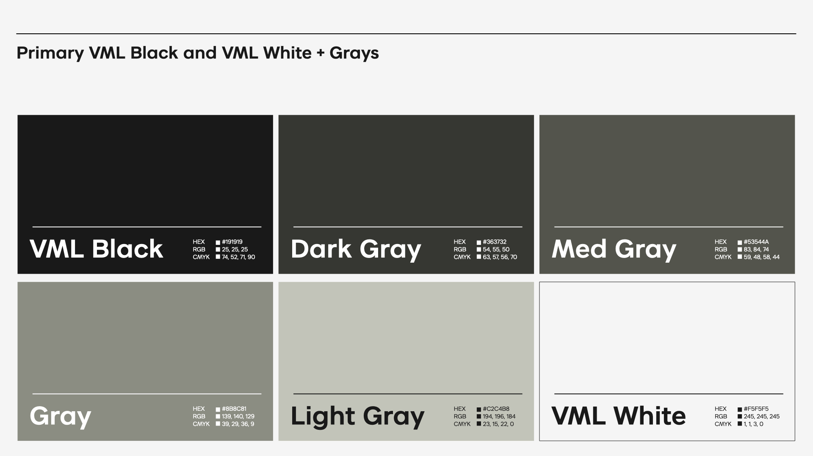
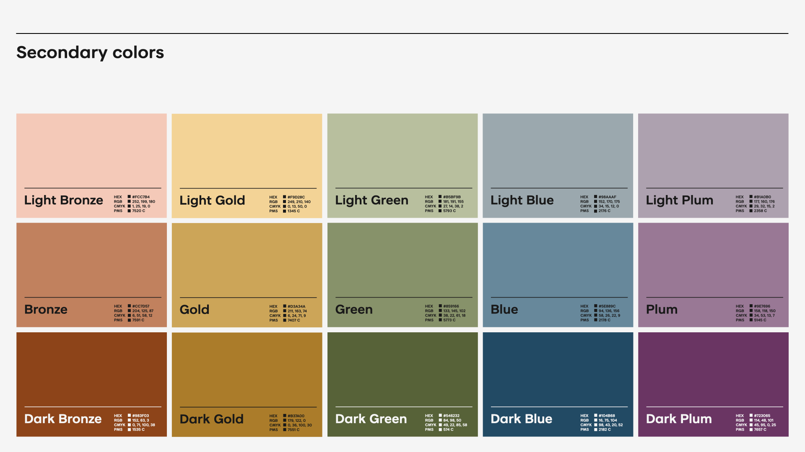

03 — Cor
Preto e branco primeiro. Cor com intenção.
A VML está migrando de um uso de cor ousado e saturado para uma paleta curada e comedida, sinalizando premium. A marca é primariamente preto-e-branco; cor é usada com moderação — como flood dominante ou acento, nunca decoração aleatória.
Cores core
Adaptados de preto e branco puros — não usar #000000/#FFFFFF puros como substituto.
Escala de cinza
#191919
#363732
#53544A
#8B8C81
#C2C4B8
#F5F5F5
Paleta secundária
5 famílias × 3 tons (Light / Base / Dark). Usar uma família por vez, combinada com VML Black e/ou VML White.
Bronze
Gold
Green
Blue
Plum
Valores completos de RGB/CMYK por tom estão em agente/03_cor.md. Para produção offset use CMYK; para tela, RGB. Swatches Adobe (.ase) prontos para Illustrator/InDesign/Photoshop em agente/assets/cor/.
Cor e o logo
- Fundo colorido → logo preto ou branco (regra padrão, prioriza contraste).
- Tom-sobre-tom (logo e fundo na mesma família) → só quando legibilidade é secundária a um efeito ambiente, nunca em uso hero.
- Preto e branco devem ser os fundos mais usados, especialmente em execuções hero (web, social, capa).
- Co-branding: se a VML deve ser dominante, seguir a paleta padrão; se o cliente for central, reduzir a VML — logo preto ou branco discreto.
Tabela de contraste logo × fundo (regra derivada)
O guideline oficial só declara o princípio geral de contraste — não traz uma tabela cor-a-cor. Um teste real com agente de IA (2026-07-22) mostrou que, sem uma tabela explícita, decisões podem variar. Esta tabela formaliza o princípio por luminância perceptual (Y = 0,299R + 0,587G + 0,114B; Y ≥ 128 → logo preto, Y < 128 → logo branco) — é uma inferência nossa, não texto literal do guideline.
| Fundo | Y | Logo |
|---|---|---|
| VML White #F5F5F5 | 245 | Preto |
| VML Black #191919 | 25 | Branco |
| Dark Gray #363732 | 54 | Branco |
| Med Gray #53544A | 83 | Branco |
| Gray #8B8C81 | 138 | Preto |
| Light Gray #C2C4B8 | 194 | Preto |
| Light Bronze #FCC7B4 | 213 | Preto |
| Bronze #CC7D57 | 144 | Preto |
| Dark Bronze #983F03 | 83 | Branco |
| Light Gold #F9D28C | 214 | Preto |
| Gold #D3A34A | 167 | Preto |
| Dark Gold #B37A00 | 125 | Branco |
| Light Green #B5BF9B | 184 | Preto |
| Green #859166 | 137 | Preto |
| Dark Green #546232 | 88 | Branco |
| Light Blue #98AAAF | 165 | Preto |
| Blue #5E889C | 126 | Branco |
| Dark Blue #104B68 | 61 | Branco |
| Light Plum #B1A0B0 | 167 | Preto |
| Plum #9E7696 | 134 | Preto |
| Dark Plum #723065 | 74 | Branco |
Regra prática: tom "Light" → logo preto. Tom "Dark" → logo branco. Tom "Base" varia por família — conferir a tabela, não presumir por analogia (Blue Base pede branco, Bronze Base pede preto, apesar de ambos serem "Base").
Referência visual

